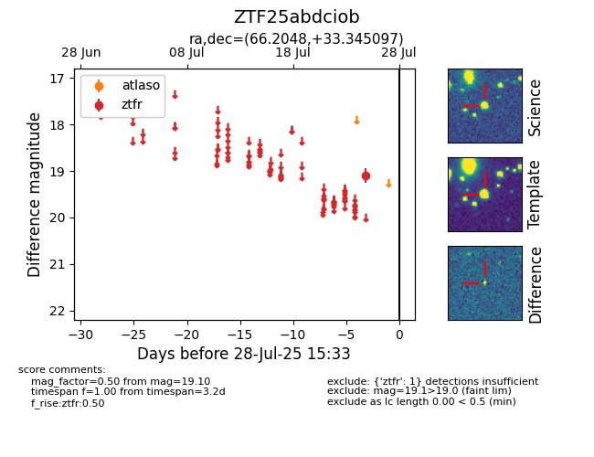

Target ZTF25abdciob at 2025-07-28 15:33, see:
FINK: fink-portal.org/ZTF25abdciob
Lasair: lasair-ztf.lsst.ac.uk/objects/ZTF25abdciob
ALeRCE: alerce.online/object/ZTF25abdciob
alt names
ZTF25abdciob (ztf,fink)
coordinates:
equatorial (ra, dec) = (66.2048,+33.34510)
galactic (l, b) = (166.0142,-11.13968)
photometry
last ztfr=19.10
1 ztfr detections
